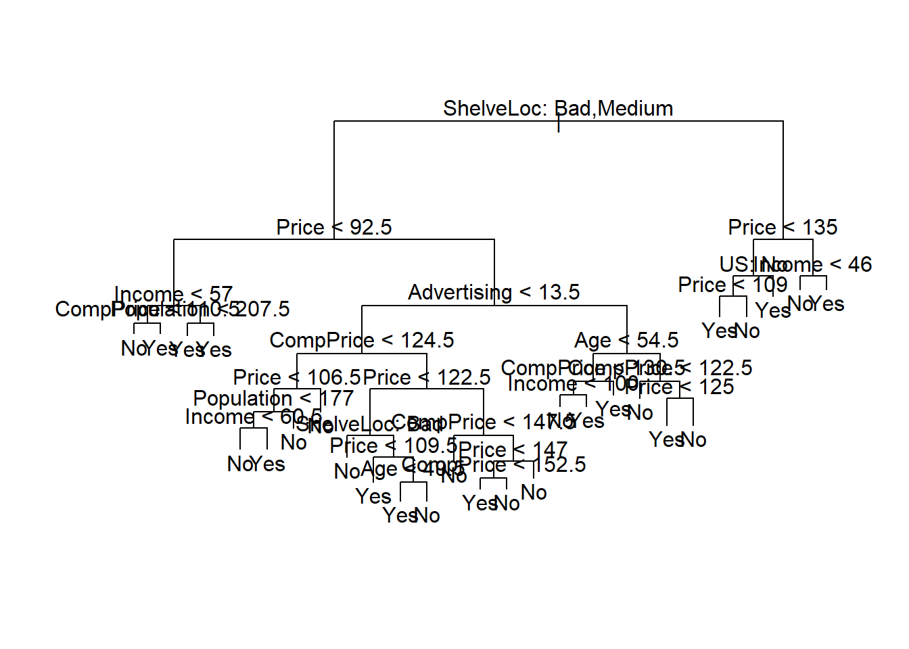
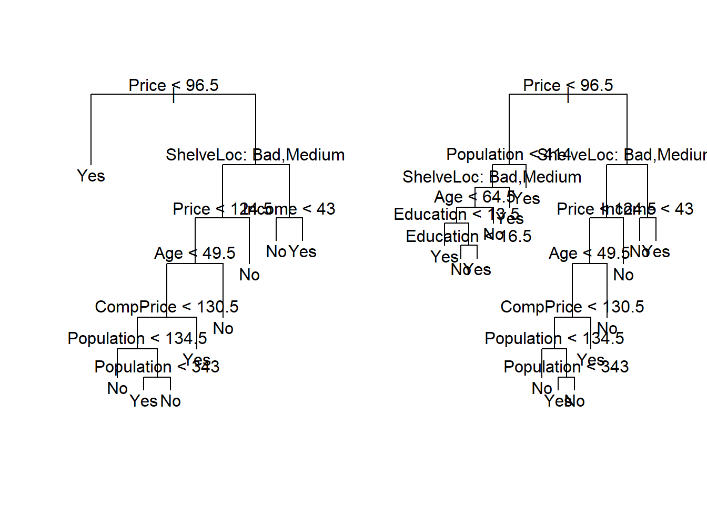
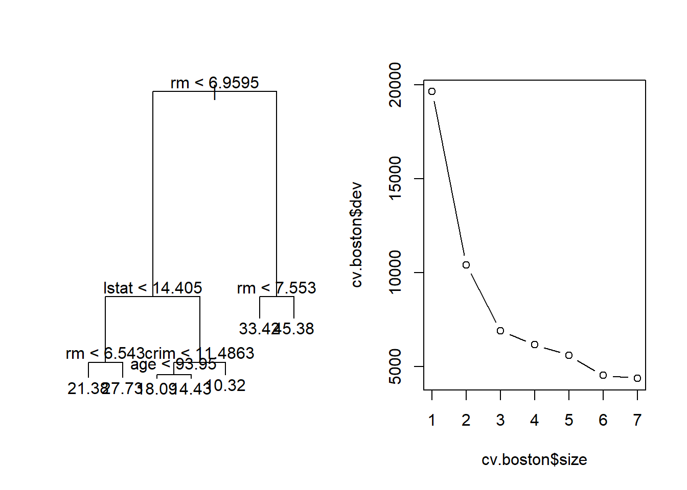
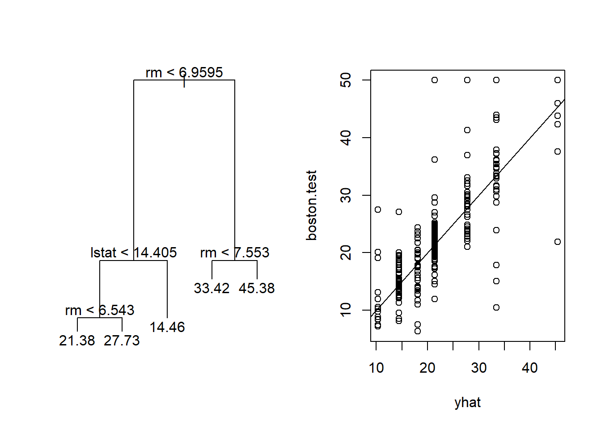
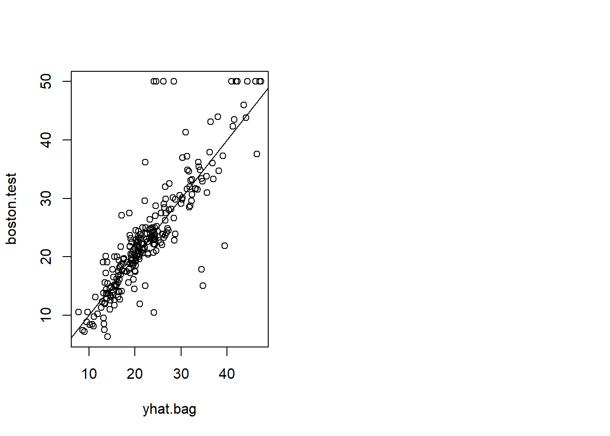
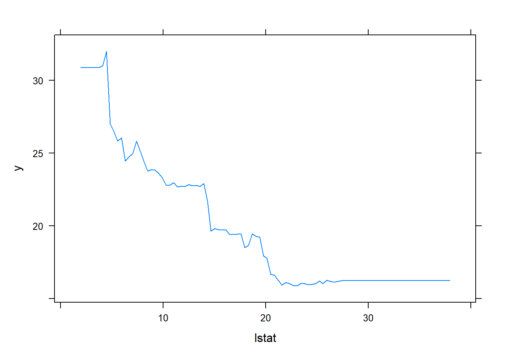

12 Chapter 8 Lab: Decision Trees
**Check out this Video: StatsLearning Lect10 R trees A 111213
Or Click Here: Here!!!
## Fitting Classification Trees
###
library(tree)
###
library(ISLR2)
attach(Carseats)
High <- factor(ifelse(Sales <= 8, "No", "Yes"))
###
Carseats <- data.frame(Carseats, High)
###
tree.carseats <- tree(High ~ . - Sales, Carseats)
###
summary(tree.carseats)
#>
#> Classification tree:
#> tree(formula = High ~ . - Sales, data = Carseats)
#> Variables actually used in tree construction:
#> [1] "ShelveLoc" "Price" "Income" "CompPrice"
#> [5] "Population" "Advertising" "Age" "US"
#> Number of terminal nodes: 27
#> Residual mean deviance: 0.4575 = 170.7 / 373
#> Misclassification error rate: 0.09 = 36 / 400
###
plot(tree.carseats)
text(tree.carseats, pretty = 0)
###
tree.carseats
#> node), split, n, deviance, yval, (yprob)
#> * denotes terminal node
#>
#> 1) root 400 541.500 No ( 0.59000 0.41000 )
#> 2) ShelveLoc: Bad,Medium 315 390.600 No ( 0.68889 0.31111 )
#> 4) Price < 92.5 46 56.530 Yes ( 0.30435 0.69565 )
#> 8) Income < 57 10 12.220 No ( 0.70000 0.30000 )
#> 16) CompPrice < 110.5 5 0.000 No ( 1.00000 0.00000 ) *
#> 17) CompPrice > 110.5 5 6.730 Yes ( 0.40000 0.60000 ) *
#> 9) Income > 57 36 35.470 Yes ( 0.19444 0.80556 )
#> 18) Population < 207.5 16 21.170 Yes ( 0.37500 0.62500 ) *
#> 19) Population > 207.5 20 7.941 Yes ( 0.05000 0.95000 ) *
#> 5) Price > 92.5 269 299.800 No ( 0.75465 0.24535 )
#> 10) Advertising < 13.5 224 213.200 No ( 0.81696 0.18304 )
#> 20) CompPrice < 124.5 96 44.890 No ( 0.93750 0.06250 )
#> 40) Price < 106.5 38 33.150 No ( 0.84211 0.15789 )
#> 80) Population < 177 12 16.300 No ( 0.58333 0.41667 )
#> 160) Income < 60.5 6 0.000 No ( 1.00000 0.00000 ) *
#> 161) Income > 60.5 6 5.407 Yes ( 0.16667 0.83333 ) *
#> 81) Population > 177 26 8.477 No ( 0.96154 0.03846 ) *
#> 41) Price > 106.5 58 0.000 No ( 1.00000 0.00000 ) *
#> 21) CompPrice > 124.5 128 150.200 No ( 0.72656 0.27344 )
#> 42) Price < 122.5 51 70.680 Yes ( 0.49020 0.50980 )
#> 84) ShelveLoc: Bad 11 6.702 No ( 0.90909 0.09091 ) *
#> 85) ShelveLoc: Medium 40 52.930 Yes ( 0.37500 0.62500 )
#> 170) Price < 109.5 16 7.481 Yes ( 0.06250 0.93750 ) *
#> 171) Price > 109.5 24 32.600 No ( 0.58333 0.41667 )
#> 342) Age < 49.5 13 16.050 Yes ( 0.30769 0.69231 ) *
#> 343) Age > 49.5 11 6.702 No ( 0.90909 0.09091 ) *
#> 43) Price > 122.5 77 55.540 No ( 0.88312 0.11688 )
#> 86) CompPrice < 147.5 58 17.400 No ( 0.96552 0.03448 ) *
#> 87) CompPrice > 147.5 19 25.010 No ( 0.63158 0.36842 )
#> 174) Price < 147 12 16.300 Yes ( 0.41667 0.58333 )
#> 348) CompPrice < 152.5 7 5.742 Yes ( 0.14286 0.85714 ) *
#> 349) CompPrice > 152.5 5 5.004 No ( 0.80000 0.20000 ) *
#> 175) Price > 147 7 0.000 No ( 1.00000 0.00000 ) *
#> 11) Advertising > 13.5 45 61.830 Yes ( 0.44444 0.55556 )
#> 22) Age < 54.5 25 25.020 Yes ( 0.20000 0.80000 )
#> 44) CompPrice < 130.5 14 18.250 Yes ( 0.35714 0.64286 )
#> 88) Income < 100 9 12.370 No ( 0.55556 0.44444 ) *
#> 89) Income > 100 5 0.000 Yes ( 0.00000 1.00000 ) *
#> 45) CompPrice > 130.5 11 0.000 Yes ( 0.00000 1.00000 ) *
#> 23) Age > 54.5 20 22.490 No ( 0.75000 0.25000 )
#> 46) CompPrice < 122.5 10 0.000 No ( 1.00000 0.00000 ) *
#> 47) CompPrice > 122.5 10 13.860 No ( 0.50000 0.50000 )
#> 94) Price < 125 5 0.000 Yes ( 0.00000 1.00000 ) *
#> 95) Price > 125 5 0.000 No ( 1.00000 0.00000 ) *
#> 3) ShelveLoc: Good 85 90.330 Yes ( 0.22353 0.77647 )
#> 6) Price < 135 68 49.260 Yes ( 0.11765 0.88235 )
#> 12) US: No 17 22.070 Yes ( 0.35294 0.64706 )
#> 24) Price < 109 8 0.000 Yes ( 0.00000 1.00000 ) *
#> 25) Price > 109 9 11.460 No ( 0.66667 0.33333 ) *
#> 13) US: Yes 51 16.880 Yes ( 0.03922 0.96078 ) *
#> 7) Price > 135 17 22.070 No ( 0.64706 0.35294 )
#> 14) Income < 46 6 0.000 No ( 1.00000 0.00000 ) *
#> 15) Income > 46 11 15.160 Yes ( 0.45455 0.54545 ) *
###
set.seed(2)
train <- sample(1:nrow(Carseats), 200)
Carseats.test <- Carseats[-train, ]
High.test <- High[-train]
tree.carseats <- tree(High ~ . - Sales, Carseats,
subset = train)
tree.pred <- predict(tree.carseats, Carseats.test,
type = "class")
table(tree.pred, High.test)
#> High.test
#> tree.pred No Yes
#> No 104 33
#> Yes 13 50
(104 + 50) / 200
#> [1] 0.77
###
set.seed(7)
cv.carseats <- cv.tree(tree.carseats, FUN = prune.misclass)
names(cv.carseats)
#> [1] "size" "dev" "k" "method"
cv.carseats
#> $size
#> [1] 21 19 14 9 8 5 3 2 1
#>
#> $dev
#> [1] 75 75 75 74 82 83 83 85 82
#>
#> $k
#> [1] -Inf 0.0 1.0 1.4 2.0 3.0 4.0 9.0 18.0
#>
#> $method
#> [1] "misclass"
#>
#> attr(,"class")
#> [1] "prune" "tree.sequence"
###
par(mfrow = c(1, 2))
plot(cv.carseats$size, cv.carseats$dev, type = "b")
plot(cv.carseats$k, cv.carseats$dev, type = "b")
###
prune.carseats <- prune.misclass(tree.carseats, best = 9)
plot(prune.carseats)
text(prune.carseats, pretty = 0)
###
tree.pred <- predict(prune.carseats, Carseats.test,
type = "class")
table(tree.pred, High.test)
#> High.test
#> tree.pred No Yes
#> No 97 25
#> Yes 20 58
(97 + 58) / 200
#> [1] 0.775
###
prune.carseats <- prune.misclass(tree.carseats, best = 14)
plot(prune.carseats)
text(prune.carseats, pretty = 0)
tree.pred <- predict(prune.carseats, Carseats.test,
type = "class")
table(tree.pred, High.test)
#> High.test
#> tree.pred No Yes
#> No 102 31
#> Yes 15 52
(102 + 52) / 200
#> [1] 0.77
## Fitting Regression Trees
###
set.seed(1)
train <- sample(1:nrow(Boston), nrow(Boston) / 2)
tree.boston <- tree(medv ~ ., Boston, subset = train)
summary(tree.boston)
#>
#> Regression tree:
#> tree(formula = medv ~ ., data = Boston, subset = train)
#> Variables actually used in tree construction:
#> [1] "rm" "lstat" "crim" "age"
#> Number of terminal nodes: 7
#> Residual mean deviance: 10.38 = 2555 / 246
#> Distribution of residuals:
#> Min. 1st Qu. Median Mean 3rd Qu. Max.
#> -10.1800 -1.7770 -0.1775 0.0000 1.9230 16.5800
###
plot(tree.boston)
text(tree.boston, pretty = 0)
###
cv.boston <- cv.tree(tree.boston)
plot(cv.boston$size, cv.boston$dev, type = "b")
###
prune.boston <- prune.tree(tree.boston, best = 5)
plot(prune.boston)
text(prune.boston, pretty = 0)
###
yhat <- predict(tree.boston, newdata = Boston[-train, ])
boston.test <- Boston[-train, "medv"]
plot(yhat, boston.test)
abline(0, 1)
mean((yhat - boston.test)^2)
#> [1] 35.28688
## Bagging and Random Forests
###
library(randomForest)
#> randomForest 4.7-1
#> Type rfNews() to see new features/changes/bug fixes.
set.seed(1)
bag.boston <- randomForest(medv ~ ., data = Boston,
subset = train, mtry = 12, importance = TRUE)
bag.boston
#>
#> Call:
#> randomForest(formula = medv ~ ., data = Boston, mtry = 12, importance = TRUE, subset = train)
#> Type of random forest: regression
#> Number of trees: 500
#> No. of variables tried at each split: 12
#>
#> Mean of squared residuals: 11.40162
#> % Var explained: 85.17
###
yhat.bag <- predict(bag.boston, newdata = Boston[-train, ])
plot(yhat.bag, boston.test)
abline(0, 1)
mean((yhat.bag - boston.test)^2)
#> [1] 23.41916
###
bag.boston <- randomForest(medv ~ ., data = Boston,
subset = train, mtry = 12, ntree = 25)
yhat.bag <- predict(bag.boston, newdata = Boston[-train, ])
mean((yhat.bag - boston.test)^2)
#> [1] 25.75055
###
set.seed(1)
rf.boston <- randomForest(medv ~ ., data = Boston,
subset = train, mtry = 6, importance = TRUE)
yhat.rf <- predict(rf.boston, newdata = Boston[-train, ])
mean((yhat.rf - boston.test)^2)
#> [1] 20.06644
###
importance(rf.boston)
#> %IncMSE IncNodePurity
#> crim 19.435587 1070.42307
#> zn 3.091630 82.19257
#> indus 6.140529 590.09536
#> chas 1.370310 36.70356
#> nox 13.263466 859.97091
#> rm 35.094741 8270.33906
#> age 15.144821 634.31220
#> dis 9.163776 684.87953
#> rad 4.793720 83.18719
#> tax 4.410714 292.20949
#> ptratio 8.612780 902.20190
#> lstat 28.725343 5813.04833
###
varImpPlot(rf.boston)

set.seed(1)
boost.boston <- gbm(medv ~ ., data = Boston[train, ],
distribution = "gaussian", n.trees = 5000,
interaction.depth = 4)
###
summary(boost.boston)
#> var rel.inf
#> rm rm 44.48249588
#> lstat lstat 32.70281223
#> crim crim 4.85109954
#> dis dis 4.48693083
#> nox nox 3.75222394
#> age age 3.19769210
#> ptratio ptratio 2.81354826
#> tax tax 1.54417603
#> indus indus 1.03384666
#> rad rad 0.87625748
#> zn zn 0.16220479
#> chas chas 0.09671228
###
plot(boost.boston, i = "rm")
plot(boost.boston, i = "lstat")
###
yhat.boost <- predict(boost.boston,
newdata = Boston[-train, ], n.trees = 5000)
mean((yhat.boost - boston.test)^2)
#> [1] 18.39057
###
boost.boston <- gbm(medv ~ ., data = Boston[train, ],
distribution = "gaussian", n.trees = 5000,
interaction.depth = 4, shrinkage = 0.2, verbose = F)
yhat.boost <- predict(boost.boston,
newdata = Boston[-train, ], n.trees = 5000)
mean((yhat.boost - boston.test)^2)
#> [1] 16.54778
## Bayesian Additive Regression Trees
###
library(BART)
#> Loading required package: nlme
#> Loading required package: nnet
#> Loading required package: survival
x <- Boston[, 1:12]
y <- Boston[, "medv"]
xtrain <- x[train, ]
ytrain <- y[train]
xtest <- x[-train, ]
ytest <- y[-train]
set.seed(1)
bartfit <- gbart(xtrain, ytrain, x.test = xtest)
#> *****Calling gbart: type=1
#> *****Data:
#> data:n,p,np: 253, 12, 253
#> y1,yn: 0.213439, -5.486561
#> x1,x[n*p]: 0.109590, 20.080000
#> xp1,xp[np*p]: 0.027310, 7.880000
#> *****Number of Trees: 200
#> *****Number of Cut Points: 100 ... 100
#> *****burn,nd,thin: 100,1000,1
#> *****Prior:beta,alpha,tau,nu,lambda,offset: 2,0.95,0.795495,3,3.71636,21.7866
#> *****sigma: 4.367914
#> *****w (weights): 1.000000 ... 1.000000
#> *****Dirichlet:sparse,theta,omega,a,b,rho,augment: 0,0,1,0.5,1,12,0
#> *****printevery: 100
#>
#> MCMC
#> done 0 (out of 1100)
#> done 100 (out of 1100)
#> done 200 (out of 1100)
#> done 300 (out of 1100)
#> done 400 (out of 1100)
#> done 500 (out of 1100)
#> done 600 (out of 1100)
#> done 700 (out of 1100)
#> done 800 (out of 1100)
#> done 900 (out of 1100)
#> done 1000 (out of 1100)
#> time: 6s
#> trcnt,tecnt: 1000,1000
###
yhat.bart <- bartfit$yhat.test.mean
mean((ytest - yhat.bart)^2)
#> [1] 15.94718
###
ord <- order(bartfit$varcount.mean, decreasing = T)
bartfit$varcount.mean[ord]
#> nox lstat tax rad rm indus chas
#> 22.952 21.329 21.250 20.781 19.890 19.825 19.051
#> ptratio age zn dis crim
#> 18.976 18.274 15.952 14.457 11.007
###